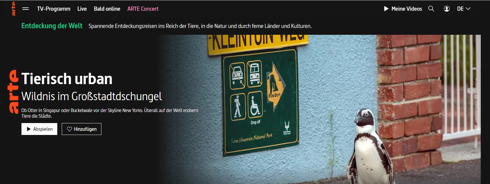

德法公共电视台 Arte.TV
德法公共电视台
德法公共电视台（法语：Association Relative à la Télévision Européenne，缩写Arte；直译为欧洲电视协会）是一个于1992年由法国、德国合资建立的公共电视频道，总部位于斯特拉斯堡和巴登巴登，宗旨是推广优质节目与世界艺术文化，节目多以法语和德语播出，并在线提供西班牙语、波兰语、意大利语字幕。arte由法国与德国各出资50%，董事会成员比例为法德各半并轮流担任董事长与总裁[1]。预算主要来自德法两国视听税而非广告收入，会透过合制方式与世界各地团队制作优质文化节目[2]。
